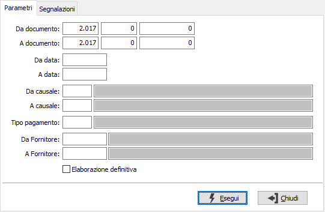
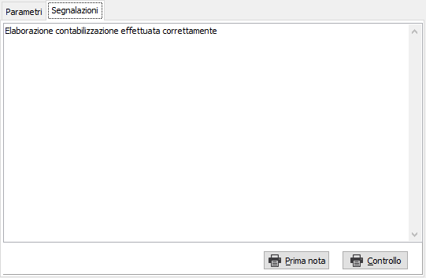

Con il pulsante Prima nota può essere eseguita direttamente la stampa dei movimenti generati.
Con il pulsante Prima nota può essere eseguita direttamente la stampa dei movimenti generati.Contabilizzazione autofatture
Il programma effettua la generazione dei movimenti contabili, provvisoria o definitiva, utilizzando i dati delle autofatture esistenti in archivio in base ai parametri inseriti dall’utente.

DA DOCUMENTO: tre campi per contenere rispettivamente anno, serie sezionale e numero del documento da cui si vuole iniziare la selezione. Confermando a vuoto, la selezione inizia dal primo documento compatibile con i successivi parametri.
A DOCUMENTO: tre campi per contenere rispettivamente anno, serie sezionale e numero del documento con cui si vuole concludere la selezione. Confermando a vuoto, la selezione termina con l’ultimo documento compatibile con i successivi parametri.
DA DATA: data documento da cui si vuole iniziare la selezione. Confermando a vuoto, la selezione inizia dalla prima data valida.
A DATA: data documento con cui si vuole concludere la selezione. Confermando a vuoto, la selezione inizia dalla prima data valida.
DA CAUSALE: codice della causale documento da cui si vuole iniziare la selezione. Confermando a vuoto, la selezione inizia dalla prima causale valida. Sul campo sono attive le funzioni di ricerca (F9).
A CAUSALE: codice della causale documento con cui si vuole iniziare la selezione. Confermando a vuoto, la selezione termina all’ultima causale valida. Sul campo sono attive le funzioni di ricerca (F9).
TIPO PAGAMENTO: codice del tipo di pagamento, presente nella tabella tipi pagamento, per cui si vuole effettuare la selezione. Confermando a vuoto vengono considerati validi tutti i tipi di pagamento. Sul campo sono attive le funzioni di ricerca (F9).
DA FORNITORE: eventuale codice del fornitore, presente in anagrafica, da cui si vuole iniziare la selezione. Confermando a vuoto, la selezione inizia dal primo fornitore valido. Sul campo sono attive le funzioni di ricerca (F9).
A FORNITORE: eventuale codice del fornitore, presente in anagrafica, con cui si vuole terminare la selezione. Confermando a vuoto, la selezione termina con l'ultimo fornitore valido. Sul campo sono attive le funzioni di ricerca (F9).
ELABORAZIONE DEFINITIVA: definisce il tipo di elaborazione: provvisoria (casella vuota) oppure definitiva (casella con segno di spunta). L'elaborazione provvisoria può essere effettuata più volte e non aggiorna nessuna tabella; l'elaborazione definitiva aggiorna le tabelle e per annullarla è necessario seguire una specifica procedura ed è consigliabile contattare il servizio Assistenza.
La pressione sul pulsante Esegui determina l'inizio dell'elaborazione dei documenti. Il risultato viene visualizzato nella pagina 'Risultati'.

Nella pagina vengono visualizzati gli errori eventualmente occorsi durante la fase di elaborazione dei documenti o se ci sono dati non corretti nei documenti elaborati. La pagina dei risultati può essere stampata utilizzando l'apposito pulsante Controllo.
Con il pulsante Prima nota può essere eseguita direttamente la stampa dei movimenti generati.